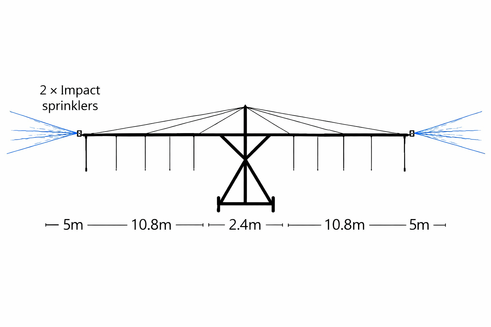

How It Works
A deep dive into the design, setup process, and specifications of the MvuraFlow irrigation system.
From Box to Irrigation in 4 Steps
Unpack the Crate
Open the flat-pack crate and lay out the pipe sections, wheel towers, sprinkler heads, and connectors at the edge of your field.
Assemble the Span
Connect the lightweight pipe sections end-to-end to form the lateral span. Sections snap-fit together — no welding, no bolts, no special tools.
Connect Water
Attach a standard hose from your water source — borehole pump, river, tank, or gravity-fed system — to the inlet end of the lateral pipe.
Walk & Irrigate
Push the wheeled system forward across your field in straight passes. Sprinklers distribute water evenly across the full span width as you move.
Anatomy of the MvuraFlow

Start Simple. Upgrade Later.
Base Model
The 2.2m boom height is perfect for low crops like vegetables, tobacco, and leafy greens. This is the starting unit — ready to irrigate on day one.
Height Extension
As your crops change, bolt on the extension piece to raise boom height to 3.0m — ideal for maize, sorghum, and other tall crops.
Capstan Motor
When you're ready to scale, add the capstan with rope to move the system automatically. Bolt it on — no new system needed.
Technical Details
Frequently Asked
Each MvuraFlow ships as flat-pack pieces inside a single compact crate. 20 units fit into one standard shipping container, which means we can deliver to any port or inland depot across Africa at standard freight rates — no oversized loads, no special trucks, no cranes. This is a major advantage over traditional lateral-move irrigation systems that require expensive heavy-haul logistics.
The MvuraFlow works with low-pressure water sources. A standard small pump or gravity-fed tank with at least 1–2 bar of pressure is sufficient. This makes it compatible with the most common water setups found on smallholder farms.
Absolutely. The MvuraFlow pairs well with solar-powered water pumps. Since the system itself is manually moved, the only powered component is your pump — and solar works perfectly for that.
Built with galvanized steel and UV-resistant materials, the MvuraFlow is designed for years of use in harsh conditions. Individual components like nozzles can be replaced cheaply if needed.
Yes. We provide visual setup guides, video tutorials, and can arrange on-site training for cooperatives or bulk orders. The system is designed to be intuitive, but we want every farmer to feel confident using it.
We currently distribute across East, West, and Southern Africa through a network of local partners. Contact us for availability in your region — we're expanding rapidly.